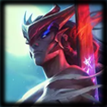

| 4 WEEKS AGO | AUTHORS SHIO SHOUJO, TRICIA "MOM CAT" TAN | |
“Okay, this is a long one. We've got a big list of small tweaks to bring more razzle dazzle as we gear up
for Worlds! We think the meta’s at a good place, so we’re carefully mixing things up without throwing
caution to the wind (although Yasuo’s down there somewhere…).
This means we’re bringing up the zhuzh, from marksfolks (Miss Fortune, Lucian, Tristana) to junglefolks
(Evelynn, Hecarim, Skarner). Which also means we’re un-zhuzhing those who have been omnipresent
picks (Karma, Syndra, Volibear) to open up their counterpicks and to give their enemies more chances to
retaliate.
We’re also tidying up some champions by giving them more cohesive identities and sharpening their
strengths, while giving others more clarity in their kits.
Finally, on a housekeeping note, the dev team is taking some AFK time in the near future. For League,
this means 10.16 will last twice as long as a normal patch and we'll be skipping patch 10.17.
We're planning to ship a set of balance changes around the time 10.17 would have launched, though, so keep
an eye out for those details. The next full patch will be 10.18!
So zoom your way down—and once you’re well-read, you’ll be well-ready to take on the third ranked split
of the season, the world, etc, etc.
Take this portal if you're looking for TFT's patch notes!”
 HANNA “SHIO SHOUJO” WOO
HANNA “SHIO SHOUJO” WOO
TRICIA "MOM CAT" TAN
“On August 9th at 11:59 PM local time, the third and final ranked split of the season will begin, but with a little something extra this time! In addition to the usual split rewards, we'll also be granting a random series 1 Eternal capsule to anyone earning 750 Split points.”
 NEW
The Unforgotten
“Yone wields his swords in 10.16!”
“High-res versions of Yone's splashes are available on League Displays!”
Q base damage increased. E damage type changed.
“Now that Akali’s been in the shadows of Pro, we can help her hit the (assassin's) mark for all levels of play by bringing up her early game damage. We’re also streamlining the damage type in her kit so that she’s able to itemize more effectively and deal more to enemies who aren’t building defensively.”
Q bonus attack speed decreased later.
“We’re pulling back on a scaling Ashe buff we gave her in 10.8 to make more space for other marksmen with less early game power and utility to shine late game against her.”
Base health decreased. W maximum heal decreased.
“Bard has been chiming in quite a bit, especially in Pro play, so we’re toning down his power in early game to open up more avenues for counter picks and in-lane pressure.”